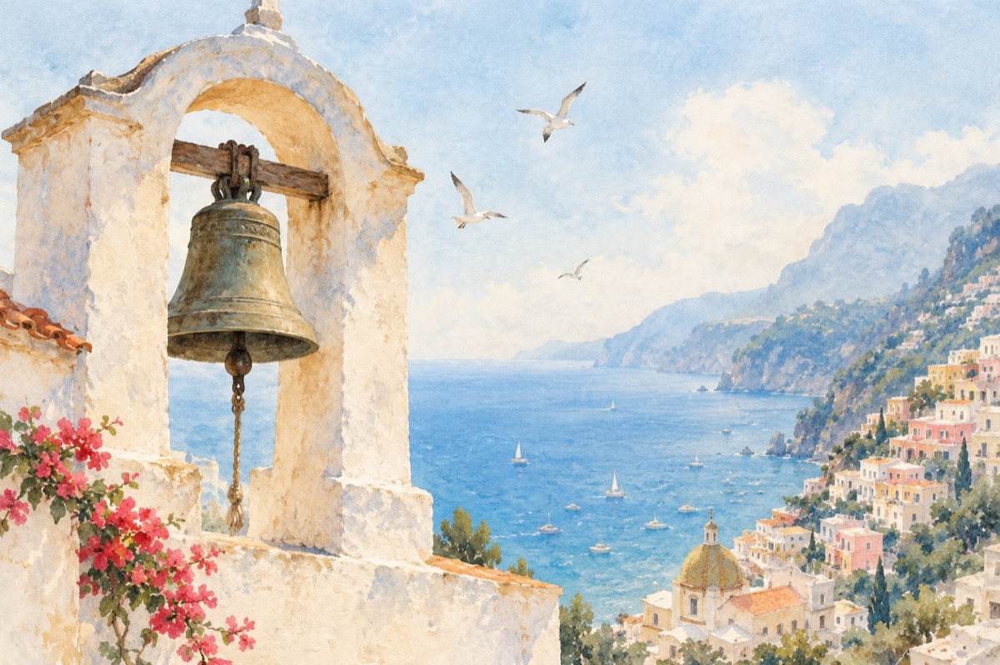

Clopotele la Positano
La Positano.
Bat clopotele-n Positano, a câta mia oară
Și duc cu ele armonia peste poate
Trezesc vii amintiri de azi și-odinioară
Atâtor întâmplări din pașnica cetate.
Din graiul lor de veacuri emis pe note
E scrisă-n partituri istoria de-aici
Și ca o moștenire transmisă mai departe
Din generație în generație, predată celor mici.
Bat clopotele-n Positano a câta mia oară
Cu o baghetă magică, minunea divină
În zarva străzii și-a tot ce ne-nconjoară
Se simte-n pulsul vieții puterea cea divină.
Bat clopotele-n Positano și inima-ți tresare
E-o muzică celestă pe note siderale
Cu-o libertate scrisă, nespusă-ntre hotare
Ce nimeni și nimeni nu le sta în cale.
Bat clopotele-n Positano și cât va fi vor bate
Pentru că viața și neviața vor merge mai departe.
Vasile Groza